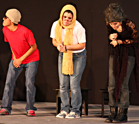
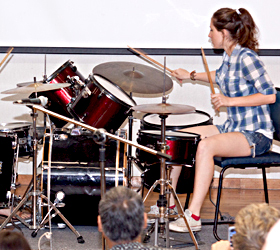

-

Inscripciones EM 2016
Consulta la oferta de cursos para EM 2016 que tenemos hasta el momento. Inscríbete con precio preferencial hasta antes del 16 de Enero de 2014. Si te inscribres a partir del 16 de Enero tendrás un recargo del 10% adicional al precio preferencial marcado.
Más información... -
Cursos para alumnos del Tec de Monterrey
Vive la experiencia del Tec de Monterrey al máximo este semestre y disfruta de las clases que Difusión Cultural tiene para ti... Son más de 70 clases en áreas como Danza, Artes plásticas, Teatro, Música y Gastronomía !Entre muchos otros!
Más información... -
Cursos para alumnos externos
Los niños tambien aprenden arte en el Tec de Monterrey. Inscribe a tus hijos a las actividades artísticas que tenemos preparadas este semestre. De igual forma ofrecemos clases de danza para las mamás de los niños. Si tienes de 17 a 25 años puedes consultar los cursos que ofrecemos para los alumnos del Tec de Monterrey.
Más información... -

Clubes musicales para alumnos del Tec de Monterrey
Para participar en Clubes Musicales, lo único que necesitas es ser alumno del Tecnológico de Monterrey, contar con un instrumento musical y tocarlo o cantar. Inscribirte a más tardar durante la primera semana de clases.
Más información...
¡ No tiene costo alguno, así que aprovecha esta oportunidad !